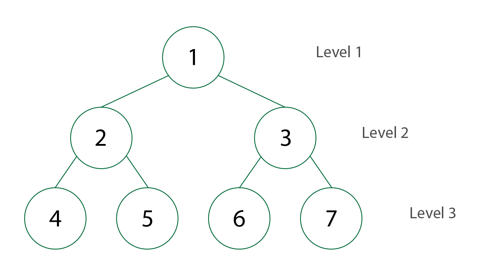
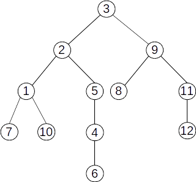

Teoria grafurilor - Origine
In teoria grafurilor, un arbore este un graf neorientat, conex si fara cicluri. Arborii reprezinta grafurile cele mai simple ca simple ca structura din clasa grafurilor conexe, fiind si cei mai frecvent utilizati in practica.

Termenul de "arbore" din teoria grafurilor a fost folosit pentru prima data de Cayley in anul 1857. El a plecat de la o analogie cu notiunea de "arbore" din botanica.
Tipuri de arbori
Un arbore liber poate fi descris ca un graf conex si aciclic.

Intr-un arbore, unuia dintre noduri ii poate fi atribuit rolul de radacina, "agatandu-se" de nivelul superior in timp ce restul nodurilor cad.

Terminologie - Reguli
Luam exemplu arborele respectiv:
